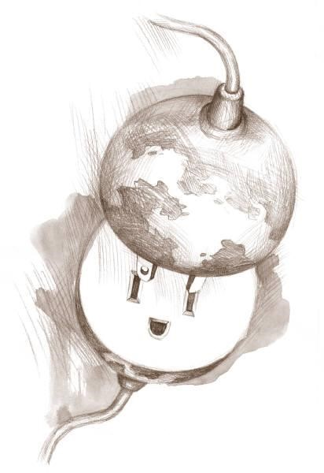
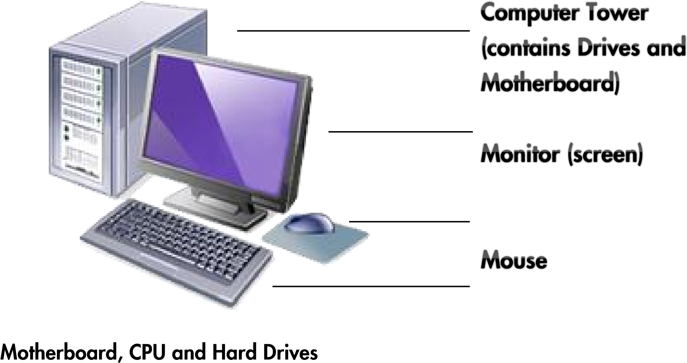
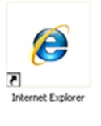
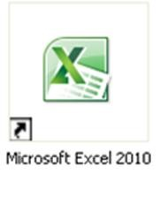
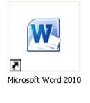
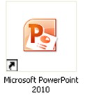
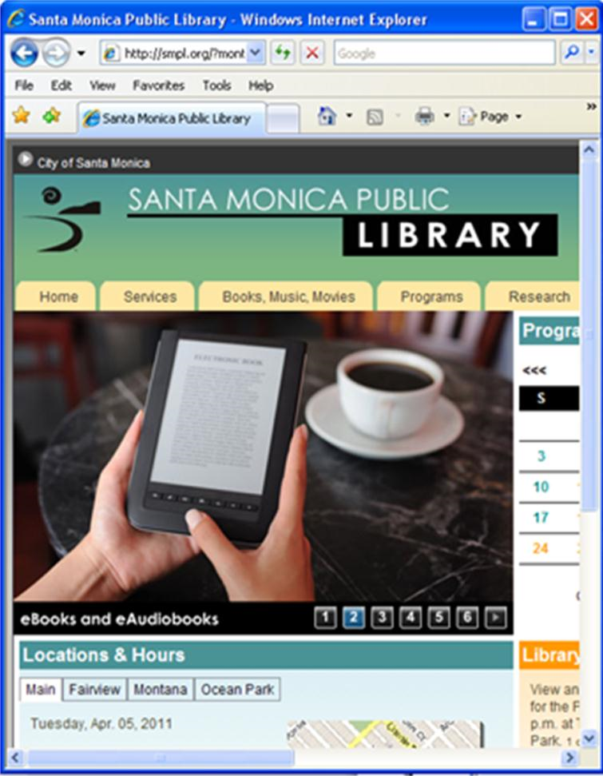

Evaluation Only. Created with Aspose.Words. Copyright 2003-2023 Aspose Pty Ltd.
COMPUTER BASICS
Computers are a part of everyday life for many people today. They are commonly used in two different ways.
Connect to the World Wide Web (WWW)
Connect to information, resources, people and places physically distant from you through the internet.
- Email friends, family, and business connections directly
- Share information through posting photos, videos, and text on hosting sites for those things such as facebook, youtube, flickr, and blogger
- Create documents online that can, if you choose, be shared through googledocs or zoho
- Follow other people’s posts on those same sites o Search for job postings, goods and services online o Apply for jobs, purchase goods online o Monitor and manage your accounts for banks, cell phones, utilities, and libraries
- Pay bills online
- File Taxes online at www.irs.gov and www.ftb.ca.gov o Use databases by connecting through the web, such as Library Catalogs, Newspaper and Magazine resources, Encyclopedias, Directories and learning tools and tutorials

2. Use the programs installed on the computer itself, without having to be online.
- Create functional and professional looking documents and presentations o Use Word to create resumes, handouts, novels, and to draft documents that you can save and modify later
o Use Power Point to create slide-show presentations o Use Excel to create spreadsheets
- Edit and Revise documents you have already created to make something new or keep your documents current and relevant
- Use computers and specialized programs in the workplace
- Save documents created on a public computer to a portable hard drive such as a thumb-drive to keep them for future editing and sharing
So, what is a Computer?
A computer is made up of two parts:
- The hardware, which consists of the physical components that make up the computer, this is what takes input from a user, processes it, and outputs the results.
- The software, which controls what you see on the screen of your computer, how you can input information, how you can receive output, what kinds of documents you can look at and create, and how you interact with the computer in general. The software is considered the most important part of what makes up a computing experience, but it cannot function without the hardware to support it. Old hardware cannot run new software.
Hardware – the nuts and bolts

- These are what make the computer run. Often contained in a box known as a Computer Tower, or under the keyboard portion of a laptop. Some modern computers put the drives and mother board behind the screen.
- The Motherboard contains the computer’s Central Processing Unit (the CPU, also known as a chip) and the wires and ports that connect the CPU to all of the other components of a computer, including the monitor, the keyboard, the mouse, the power, the internet connection, and the Drives.
- USB (Universal Serial Bus) ports attached to the motherboard are how you connect external components (like external drives, cameras, phones, mp3 players) to the computer. These are usually located on the front or back of the computer tower, or on the side of a laptop.
- The CPU is the thing that takes input and processes into output. It is the brains of the computer and is what runs all the software.
- The Hard Drives are discs that store the data such as software programs and documents that users interface with. The main Hard Drive is known at the C drive.
Monitor
This is the display screen attached to the computer which resembles a television screen. The monitor lets you see text, pictures and graphics. It is the main point of interaction with the computer. What you see on the screen when you turn the computer on is the desktop. The desktop has shortcuts to the most frequently used programs. The pictures on the desktop are called icons and symbolize programs, documents, and drives on the computer. You use a mouse to navigate the desktop and open and close programs.
Keyboard
The keyboard is like a typewriter with the addition of a few new keys to assist in communicating with the computer. One important key to remember is the Enter key. Look for the Backspace key. This key is used to erase typing errors. You may push the key once quickly to erase a letter or hold it down longer to erase entire words or phrases. What you type will appear on the monitor only if the software you are using allows it. Most people type into Word documents, or into text boxes online.
Mouse
The mouse is the main tool used to communicate with the computer. The mouse controls the icon on the computer monitor that looks like an arrow, called the pointer. Double click by pressing the left button of the mouse down twice in rapid succession while the pointer is hovering over an icon to open the program or document associated with that icon. Links, online, are opened by hovering the pointer over the link and pressing the left mouse button once. Laptops often have a trackpad or joystick located below the keyboard instead of a mouse. They are used the same way a mouse is.
Software – Why we use computers

Software refers to programs that are in the computer such as word-processing programs, Internet browsers, games, and many others. Software makes the computer useful. Software programs may be added or deleted. The most significant program that runs on the computer is the Operating System. All of the Library computers use Windows as their operating system. The operating system controls:
- Access to applications – Programs such as Word, Excel and Internet Explorer
- User Interface –Desktop, Icons and Menus
- Peripherals – Monitor, Mouse, Keyboard, Disk Drives
- Storage and retrieval of information
- Output – printing and downloading
- Input – Keyboard and mouse
Applications are software that can be added to or deleted from a computer without changing the Operating System. The inverse is not true. If you change your Operating System, you often have to change your Applications, too, as Applications use components from the Operating System to run, and are often designed for specific versions of Operating Systems.
Common applications are:
- Internet Browsers – such as Internet Explorer, Safari, Firefox, and Chrome, are used to browse the internet or access databases such as the library catalog.
- Word Processors – such as Microsoft Word, iWork Pages, and Open Office Write, are used to word process, create letters, essays, fliers and more:
- Spreadsheet Generators – such as Microsoft Excel, iWork Numbers, and Open Office Calc, are used to arrange data and make calculations and charts using that data. They are also good for sorting lists of items.
- Presentation Software – such as Microsoft Powerpont, iWork Keynote, and Open Office Impress, are used to create slide-show like presentations like the one on screen in this class.
- Programs for Drawing; Viewing and editing digital photos; Creating websites; Creating and editing databases; Keeping track of contact information or calendars; Playing games; Almost anything else you can think of to do on a computer.
BASIC COMPONENTS OF A WINDOW
When you turn on a computer, the desktop is open with a few icons, representing programs or places on the computer. When you double click on any of those icons, a new window will open, containing either the program you just opened, or the navigation menu for the location you opened, such as the files stored on a specific drive or in a specific folder. All windows share the same components.

Title Bar
–
which tells you what
function or program you are in
Menu Bar
–
Contains the commands
and functions for
the window
Minimize Button
-
Places the window
on the taskbar, but does not close the
program.
Click
on the minimize
button. To open the window,
click
on
it from the taskbar (the gray bar
across the bottom of the screen)
Maximize Button
Returns the window
to full size. When a window is
maximized, the button changes to two
small squares instead of one large
square. This is the
Restore
button.
Close Button
–
Closes the window and
shuts down that program.
Click
on the
X
to close the window. Now
double
-
click
on
Internet Explorer
to open it
again.
Created with an evaluation copy of Aspose.Words. To discover the full versions of our APIs please visit: https://products.aspose.com/words/